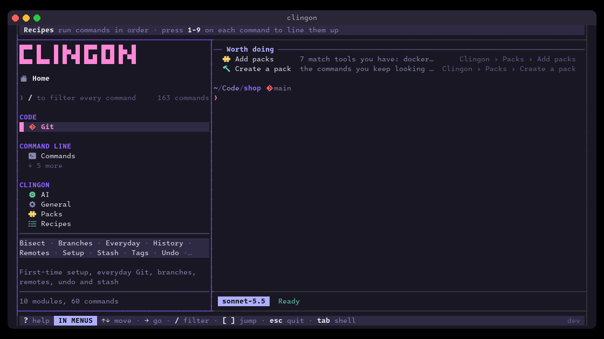
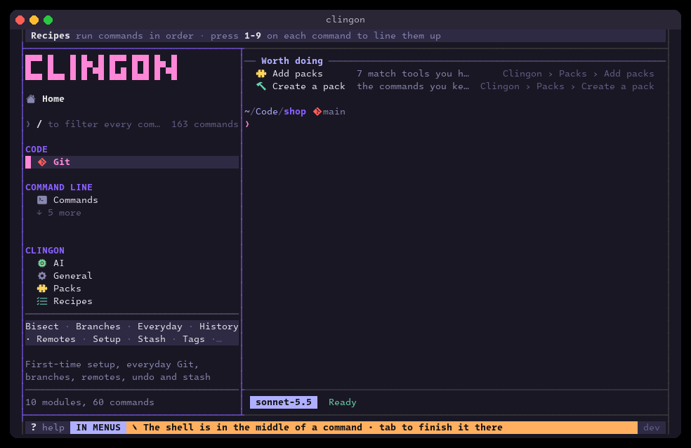
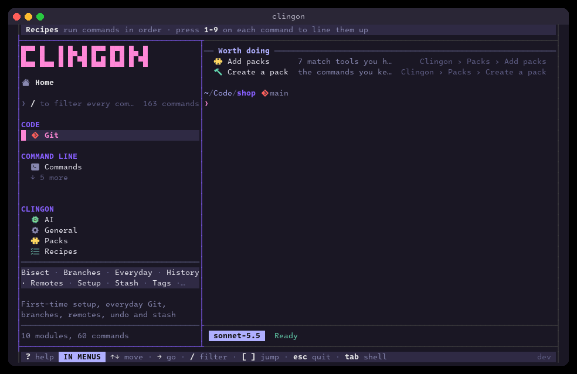
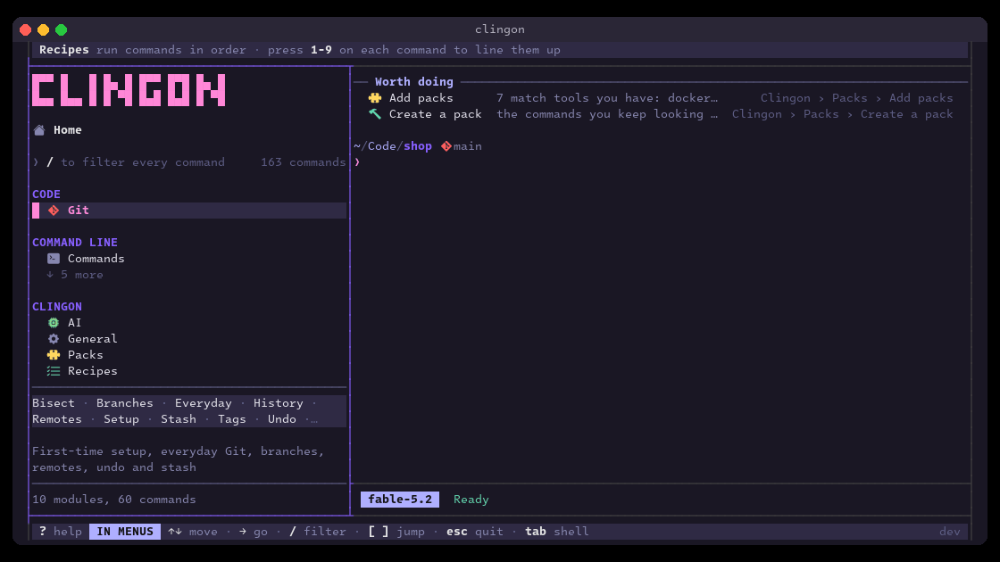

git › everyday › Pretty log - 0.12 MB, 1120 x 630, 7.2 s
git › stash › Pop stash - 0.12 MB, 1120 x 630, 7.6 s
git › stash › Apply stash - 0.13 MB, 1120 x 630, 7.8 s

files › look-around › Folder tree - 0.15 MB, 1120 x 630, 7.2 s
git › everyday › Diff - 0.10 MB, 1120 x 630, 5.2 s
git › everyday › Diff staged - 0.11 MB, 1120 x 630, 5.8 s
files › look-around › Peek at a file - 0.11 MB, 1120 x 630, 8.8 s
git › history › Show a commit - 0.15 MB, 1120 x 630, 7.7 s
git › everyday › Status - 0.10 MB, 1120 x 630, 5.3 s
git › tags › New tag - 0.12 MB, 1120 x 630, 9.2 s
git › everyday › New branch - 0.11 MB, 1120 x 630, 8.0 s
system › disk › Folder size - 0.14 MB, 1120 x 630, 7.2 s
git › undo › Unstage file - 0.11 MB, 1120 x 630, 7.9 s
git › tags › List tags - 0.11 MB, 1120 x 630, 5.7 s

git › stash › List stashes - 0.11 MB, 1120 x 630, 6.0 s
system › utilities › Time now (ISO) - 0.11 MB, 1120 x 630, 6.2 s

system › utilities › Time now (Unix) - 0.11 MB, 1120 x 630, 6.2 s
git › branches › Recent branches - 0.11 MB, 1120 x 630, 6.2 s

AI (claude-fable-5.2): Show me the last ten commits as a graph - 0.18 MB, 1120 x 630, 11.4 s
AI (claude-fable-5.2): Make a pack called Shop with one command, Opening hours, that prints our hours. Then run it. - 0.29 MB, 1120 x 630, 29.4 s